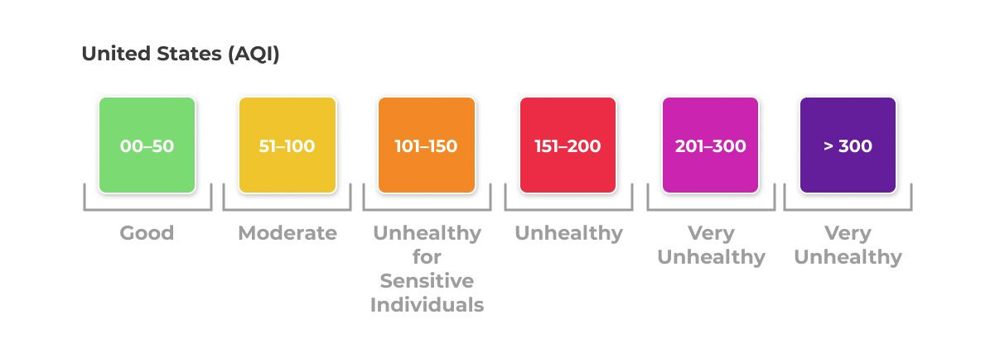
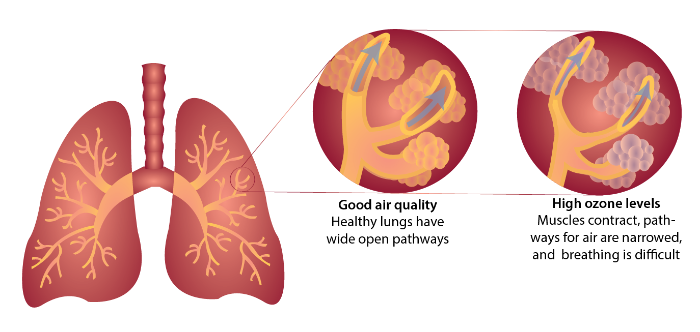

This project examines the cause and effect of air quality and CO2 emissions in the United States. By showing the impact that air quality can have on health and other factors, this project argues that more strides should be taken to reduce carbon emissions. This project analyzes factors that cause air pollution such as carbon emissions from industrial facilities, and correlated effects of poor air quality like respiratory disease. The scope of the project is within the United States.
The goal of this project is to inspire action. Traditionally, people do not personalize the consequences of certain phenomena because they think it does not concern them. Thus, we hope to tell a story about how the distribution of chronic respiratory illness can be correlated to air quality, the locations of facilities outputting greenhouse gasses, and socioeconomic status. We aim to develop an argument in which facilities that produce high levels of greenhouse gasses are unjustly placed in low income communities. As we explore this correlation by comparing socioeconomic status to the locations of facilities outputting greenhouse gas, we hope to highlight the correlation of wealth inequality affecting health outcomes while focusing on the geospatial relationships of these variables.
The United States Environmental Protection Agency (EPA) has developed the Air Quality Index, or AQI that ranges from 0 to 500. The AQI is divided into six categories varying by severity of health concern. An AQI value over 300 represents hazardous air quality and below 50 the air quality is good. EPA establishes an AQI for five major air pollutants regulated by the Clean Air Act. Each of these pollutants has a national air quality standard set by EPA to protect public health: ground-level ozone, particle pollution (also known as particulate matter, including PM2.5 and PM10), carbon monoxide, sulfur dioxide, and nitrogen dioxide.
The map below introduces the topic of air pollution in the United States by giving the audience a look at a 10 year change in air quality in the United States from 2010 to 2020. This provides background information on the current trends in air quality over time in recent years as well as the current state of air quality in the United States today. One interesting insight from this map is that in 2010 the median AQI was 38 with the highest AQI being in Riverside, CA at 87. 10 years later in 2020, the median AQI was 33 with the highest at 117 in New Madrid County, MO.
Understanding the causes of air pollution is a step towards knowing how to stop further pollution. According to the EPA, 24% of greenhouse gas emissions in 2020 came from the industrial sector (EPA, 2020). Examining where these facilities are located can be useful for examining the geographical relationship between air quality and polluting factories. The map below shows where polluting factories are located in the United States by a proportional symbol representative of how much emissions are coming from each facility. Facilities with higher emissions are represented by larger symbols. Examining the causes of air pollution aids in find a geographical connection between air quality and air polluters. By representing industrial air polluters with a proportional symbols map, the largest polluters will be distinctly shown with a larger symbol, making it clearer to the reader which factories are causing the most harm to the environment and where.
Upon analyzing the data, the largest polluter is the James H Miller Jr Power Plant in Alabama which outputted 17,232,898 metric tons of CO2e into the environment in 2020. The listed air quality for the plant's location in 2020 was 48, which is listed as above the national average of 33. Another point of interest that stood out in the data was the Madrid Power Plant in Missouri, outputting 6,732,630 metric tons of CO2e into the environment in 2020. In 2020, Madrid County had an AQI of 117, the highest in the country. This map highlights one source of causality for the Air Quality Map of the United States.
Poor air quality can leave harmful effects for the people who experience it. With the increase in greenhouse gasses, ozone levels, and poor air quality over time, we have also seen a rise in chronic respiratory disease mortality rates. Chronic respiratory diseases affect the airways and structures of the lungs, leaving people with coughing, wheezing, and difficulty breathing. Air pollution is a prominent risk factor for chronic respiratory diseases, and people with conditions like asthma and chronic obstructive pulmonary disease may find their condition worsening in areas of high air pollution. Figure 2 shows how ozone pollution affects the lungs, making it difficult to breathe.
The map below shows that chronic respiratory diseases have increased in the United States over time. There is an apparent correlation between counties with poor air quality and counties with high mortality rates from chronic respiratory disease. The goal of the map is to emphasize the negative impact that air pollution and poor air quality has on the health of the people afflicted by it.
Looking at the data presented in this map, high percentages of chronic respiratory disease mortality rate change are seen in the midwestern and southern United States. This is consistent with the regions in the United States that have a higher concentration of emissions and worsening air quality. When observing the areas surrounding the James H. Miller Jr. Power Plant in Alabama and the Madrid Power Plant in Missouri, these counties have had chronic respiratory disease mortality rates increase by anywhere from 60% to 160% from 1985 to 2014.
In the discussion of health outcomes and its relation to geography, it is integral to contextualize data with people. After all, health outcomes
directly affect people, so it's helpful to provide some kind of context as to who is being affected by these health outcomes. Historically,
people from marginalized communities such as BIPOC, have experienced systematic racism in that facilities, businesses, and other services are forced upon
local residents. Therefore, due to this social inequality, it is evident that a metric such as social class exists within the United States, and that people from a lower social class
are more likely to face hardships, as opposed to people from a higher social class.
However, how do we define social class-- how can we quantify this? With my dataset from
Visit Data Source!
I followed the formula that the author conceptualized, which takes into consideration:
Map 4 illustrates that GHG facilities may be placed in areas of low SES, and by connection an increase in respiratory disease mortality rate. This correlation is explored by comparing socioeconomic status values to the spatial location of facilities outputting greenhouse gas. This highlights the correlation of wealth inequality, negatively affecting health outcomes, while also contributing to the conversation on geographic inequalities.
Taking all of the maps presented together, it is apparent that regions with high emissions and high percentage increases in mortality rates from chronic respiratory diseases also consist of people with low socioeconomic status. This observation is most prominent across our findings in the midwest and southern region of the United States. Counties in this part of the county have higher average AQI, more emissions, and larger increases of chronic respiratory disease mortality rates than other regions in the United States. Seeing that the midwest and southern region of the United States consists mostly of communities with lower socioeconomic status, it is not a coincidence that air-polluting facilities are more densely concentrated in this same area. People from lower socioeconomic backgrounds disproportionately face the burden of poor air quality, and legislation must be passed to both reduce the negative environmental impact of the industrial sector and protect historically exploited communities.